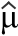

HIV-Infektionsraten
In den späten 1980er Jahren interessierten sich Forscher
für die HIV-Infektionsraten homosexueller Männer in den USA
und sammelten Daten aus einer Stichprobe von 4.955 homosexuellen
Männern in Baltimore, Chicago, Los Angeles und Pittsburgh.
| Der Stichprobenanteil, p, der homosexuellen Männer mit HIV ist eine Schätzung des unbekannten Populationsanteils, π. |
Das Resultat war, dass aus der Stichprobe von 4.955 homosexuellen Männern 1.883 mit dem HIV-Virus infiziert waren. Demnach ist die Schätzung der infizierten Menge aller homosexuellen Männer in diesen vier Städten
 = p = 1883/4955 = 0.380
= p = 1883/4955 = 0.380
| Hinweis: Ein "Dachzeichen" wird oft über einen Parameter geschrieben, um eine Schätzung zu kennzeichnen. |
Mutterschafe pro Betrieb in der Region
Ein Beamter aus dem Ministerium für Landwirtschaft will in einer Region die durchschnittliche Zahl der Mutterschafe in den Betrieben schätzen, welche im Frühjahr Lämmer gebären. Der Beamte weiß, dass es in dieser Region 3.535 Betriebe gibt, aber das Sammeln von Informationen aus allen Betrieben sehr teuer wäre, somit werden die Daten aus einer zufälligen Stichprobe von 100 Betrieben gesammelt.
| Der Mittelwert der Stichprobe der Mutterschafe je
Betrieb, x, ist eine
Schätzung des unbekannten Mittelwerts der Grundgesamtheit, μ. |
Auf den 100 beprobten Betrieben gab es insgesamt 26.360 Mutterschafe, so dass der Mittelwert der Mutterschafe je Betrieb 263,6 ergab. Man schätzt den Durchschnitt der Mutterschafe pro Betrieb in der gesamten Region auf
 =  = 263.6 Mutterschafe
= 263.6 Mutterschafe
Gesamtzahl der Mutterschafe in der Region
Die Beispieldaten können auch verwendet werden, um die Gesamtzahl der Mutterschafe in der Region zu schätzen. Man schätzt die Gesamtzahl für alle 3.535 Betriebe in der Region auf
263.6 x 3,535 = 931,826 Mutterschafe
Das folgende Diagramm veranschaulicht den Vorgang.
Vergleich von Bier
Eine Brauerei möchte die Wirkung eines Zusatzstoffes auf den Alkoholgehalt ihrers Premium-Biers testen. Es wurden mehrere Chargen sowohl mit, als auch ohne den Zusatz gebraut und der Alkoholgehalt jeder Charge wurde aufgezeichnet. Folglich hat man zwei Zufallsstichproben, eine aus einer hypothetischen Population von Alkoholgehalt der Chargen gebraut mit Zusatzstoff, und die andere aus der entsprechenden hypothetischen Population ohne Zusatzstoff
Man konnte die beiden Populationsverteilung schätzen und diese vergleichen. Die Brauerei ist jedoch vor allem daran interessiert, ob der Alkoholgehalt mit dem Zusatzstoff erhöht oder verringert wird. Dies kann als Term der zwei Mittelwerte der Grundgesamtheiten formuliert werden - unterscheiden sich diese?
Die Mittelwerte der Stichproben bieten Schätzungen der
entsprechenden Mittelwerte der Grundgesamtheiten und sind die Grundlage
für die Beantwortung der Frage.
| Der Unterschied der Mittelwerte der Stichproben ist eine Schätzung der Differenz zwischen den unbekannten Mittelwerten der Grundgesamtheiten. |